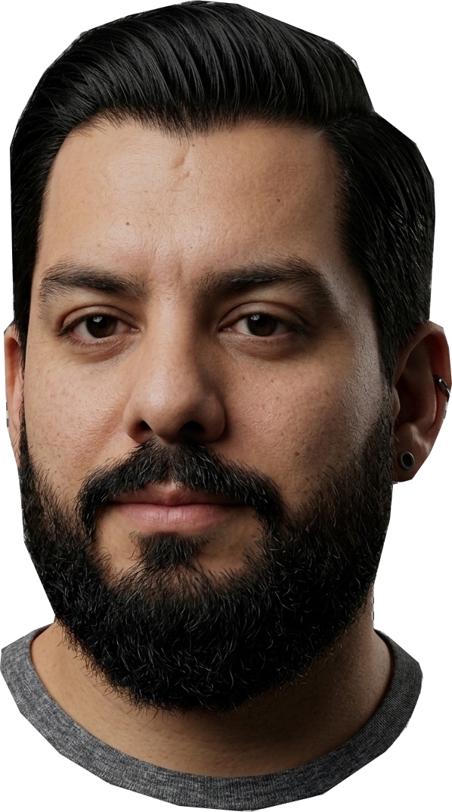

Somos cinco y este es nuestro primer TP de Desarrollo de Sistemas Web Front End. Acá cada uno se presenta, y en la bitácora contamos cómo lo fuimos armando.
Tocá una tarjeta para ver el perfil de cada uno.

Todos los perfiles salen de la misma base, así se ven parejos y son fáciles de mantener.
Lo probamos en pantallas chicas, medianas y grandes para que nada se rompa.
Carruseles, filtros y hasta un botón para saludar: los perfiles se pueden tocar.
En la bitácora contamos qué decidimos, qué se nos trabó y cómo lo resolvimos.
Leer la bitácora